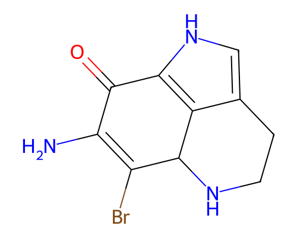

Zyzzya fuliginosa
- Collection location
- Papua New Guinea
DOI 10.1021/np010581l ↗ · PubMed 12027767 ↗
PDF p1,p2
Source qualifications
Primary source checkedExcluded from coordinate analysis
Excluded from depth analysis
Recorded organism, strain, collection context and compound-linked source evidence.
A source profile groups recorded name variants. Primary-source review, strain identification and sequence verification are separate evidence decisions.
Compound activities are not automatically attributable to this strain, sample or source publication.
| Structure | Compound | Formula | MW (g/mol) | Reported source depth | Classification | Activity records | Admitted evidence rows |
|---|---|---|---|---|---|---|---|
 Structure image unavailable Structure image unavailable | Makaluvamine AConnections → | C11H11N3O | 201.229 g/mol | Alkaloid | 3 | 3 | |
 Structure image unavailable Structure image unavailable | MAKALUVAMINE FConnections → | C18H14BrN3O2S | 416.3 g/mol | Alkaloid | 12 | 12 | |
 Structure image unavailable Structure image unavailable | MAKALUVAMINE GConnections → | C22H20F3N3O4 | 结构/身份暂缓，未计算 | 10 m | Alkaloid | 7 | 7 |
 Structure image unavailable Structure image unavailable | MAKALUVAMINE HConnections → | C14H14F3N3O3 | 结构/身份暂缓，未计算 | 10 m | Alkaloid | 1 | 1 |
 Structure image unavailable Structure image unavailable | MAKALUVAMINE IConnections → | C12H10F3N3O3 | 结构/身份暂缓，未计算 | 13 m (reported in checked main text) | Alkaloid | 4 | 1 |
 Structure image unavailable | MAKALUVAMINE NConnections → | C10H10BrN3O | 268.114 g/mol | Alkaloid | 0 | 0 |
Up to two results per compound are shown. Open the compound record for all results, conditions and restrictions.
Shared cited references are prioritized where available. A shared reference does not establish a strain-specific assay or the same experimental sample.
| Product | Recorded results | Result evidence |
|---|---|---|
| Makaluvamine A | P388 murine leukemia in vivo; dose0.5mg/kg Increase in life span (ILS) = 0 % Evidence detailsPrimary result checkedOther cited reference for this compound HCT-116 IC50 = 1.3 μM Evidence detailsPrimary result checkedOther cited reference for this compound | |
| MAKALUVAMINE F | Bacillus subtilis MIC = 12.5 μg/mL; Bacterial growth inhibition; author-reported species retained; no direct protein binding inference Evidence detailsPrimary result checkedReference context unlinked Escherichia coli MIC > 100 μg/mL; Bacterial growth inhibition; author-reported species retained; no direct protein binding inference Evidence detailsPrimary result checkedReference context unlinked | |
| MAKALUVAMINE G | HEK293 IC50 = 2000 nM Evidence detailsPrimary result checkedOther cited reference for this compound Human and mouse liver (author-predicted extraction) Predicted hepatic extraction ratio EH：human liver Predicted hepatic extraction ratio EH = 0.92 dimensionless；mouse liver Predicted hepatic extraction ratio EH = 0.91 dimensionless Evidence detailsPrimary result checkedOther cited reference for this compound | |
| MAKALUVAMINE H | HIV-1 envelope-mediated cell-fusion reporter assay IC50 ≈ 5 μM Evidence detailsPrimary result checkedOther cited reference for this compound | |
| MAKALUVAMINE I | HCT-116 Numerical value withheld; the original record is retained in the audit. Evidence restriction retained Other cited reference for this compound P388 Experimental result · 未报告具体数值 Evidence review pending Other cited reference for this compound | |
| MAKALUVAMINE N | No activity result recorded | No activity evidence recorded |
Repeated source records are grouped with their associated compounds.
Associated compounds: Makaluvamine A
Associated compounds: MAKALUVAMINE F
Associated compounds: MAKALUVAMINE G
Associated compounds: MAKALUVAMINE G
Associated compounds: MAKALUVAMINE H
Associated compounds: MAKALUVAMINE H
Associated compounds: MAKALUVAMINE I
Associated compounds: MAKALUVAMINE N
[ { "evidence": { "PMID": "11678667", "DOI": "10.1021/np010053+", "file": "papers/11678667/main.pdf", "locator": "p1354 coisolated compounds2–5; p1355 Biological Material", "sha256": "b5048f5aa93f1ce6934d63ca355efb8e875cf005a8e6f3a96b8b809ea772594d" }, "note": "No SMILES/InChIKey changed. Prior primary/public support preserved; identity/name mapping does not certify all atoms or stereocenters." } ]
[{"store": "formal", "field": "acceptance_property_audit.blocked_reasons", "value": ["multiple_fragments_no_salt_or_form_normalization_authorized"]}, {"store": "working", "field": "acceptance_property_audit.blocked_reasons", "value": ["multiple_fragments_no_salt_or_form_normalization_authorized"]}]
[{"store": "formal", "field": "acceptance_property_audit.blocked_reasons", "value": ["multiple_fragments_no_salt_or_form_normalization_authorized"]}, {"store": "working", "field": "acceptance_property_audit.blocked_reasons", "value": ["multiple_fragments_no_salt_or_form_normalization_authorized"]}]
[{"store": "formal", "field": "acceptance_property_audit.blocked_reasons", "value": ["multiple_fragments_no_salt_or_form_normalization_authorized"]}, {"store": "working", "field": "acceptance_property_audit.blocked_reasons", "value": ["multiple_fragments_no_salt_or_form_normalization_authorized"]}]